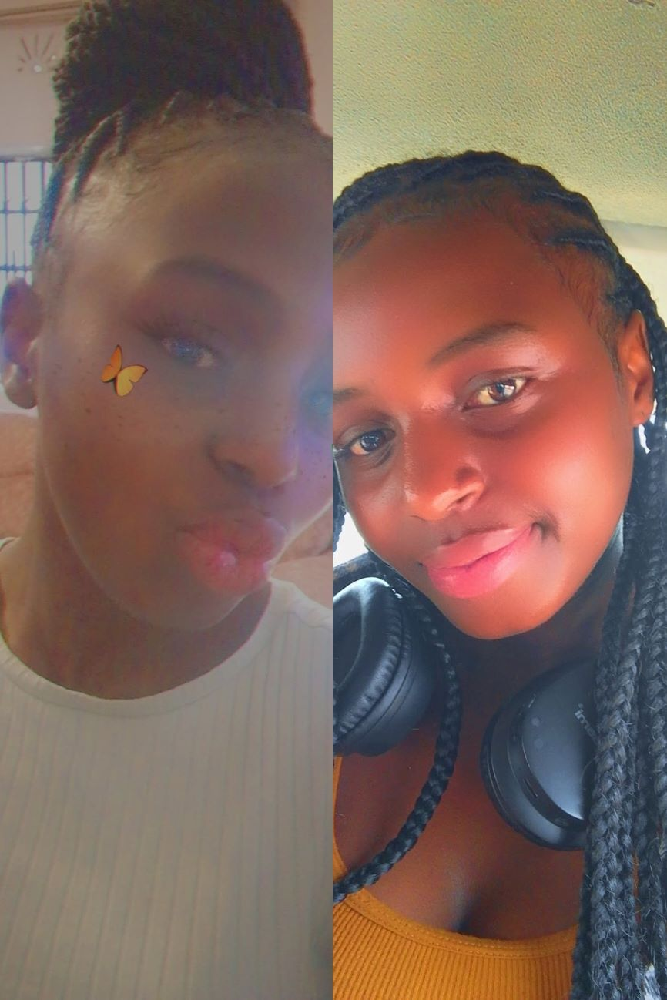

About Me
I am a second-year Bachelor of Science student in Environmental Science at JKUAT. I have knowledge of environmental conservation, natural resource management, and data analysis. I enjoy learning new things and look forward to gaining practical experience, developing my skills, and contributing to environmental research and conservation.
Fun fact: I enjoy discovering new things and learning new things.
Quick Facts
- Programme: BSc Environmental Science
- Year of study: Second Year
- Home county: Kiambu
- Dream job: Environmental Lawyer